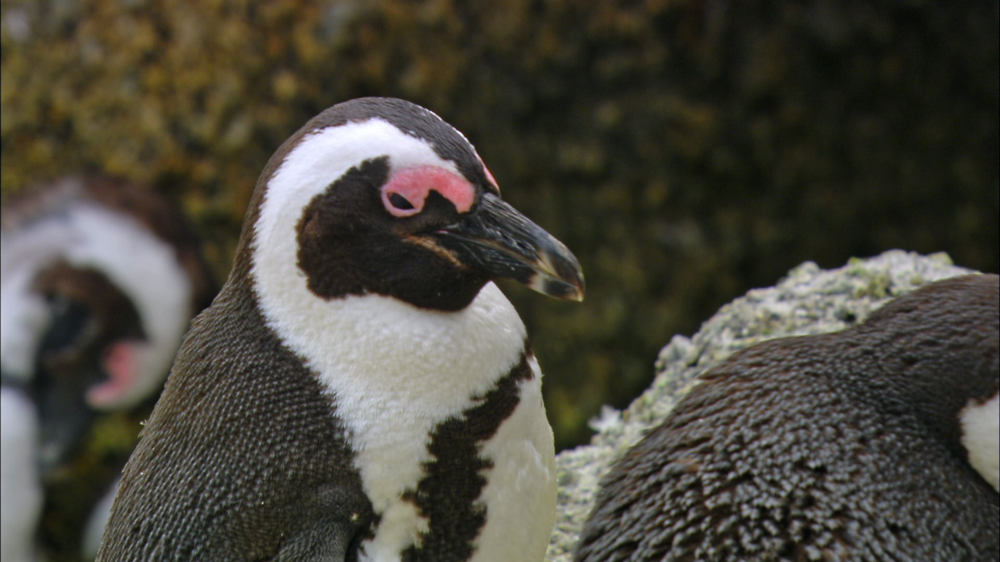

ジェンツーペンギン -Pygoscelis papua-
頭部と背中側が黒く、腹側は白、足はピンク色または橙色をしている。特徴は頭頂部を通って両目をつなぐ白い帯模様とくちばしの両側の赤色または橙色である。同じアデリーペンギン属のアデリーペンギン、ヒゲペンギンと同様に尾羽が長い。虹彩は茶色。
コウテイペンギン -Aptenodytes forsteri-
現生のペンギン目内では最大種。頭部とフリッパーの外側の羽色は黒、上胸は黄色。腹部やフリッパーの内側は白色。側頭部の耳の周辺は橙色。下嘴に黄色やピンク色の筋模様が入る。後肢にはピンク色の斑紋が入る個体もいる。下のくちばしの根もとには嘴鞘という部分があり、ここも黄色をしている。

ケープペンギン -Spheniscus demersus-
胸のラインが１本で細く、同時に顔の白い部分が多いという点が、ケープペンギン属の中でケープペンギンを見分ける目安。ロバに似た鳴き声を持つため、オスのロバを意味するジャッカスペンギンと呼ばれ、フンボルトペンギンやマゼランペンギンも同様にジャッカスペンギンと呼ばれることがある。

イワトビペンギン -Eudyptes chrysocome-
成鳥の目の上には眉のような黄色の羽毛があるのが大きな特徴である。これはマカロニペンギンなどにも見られるが、イワトビペンギンは目の後ろで大きく広がる飾り羽になっている。この飾り羽とともに頭部の羽毛も長く伸び、特徴的な冠羽を形成している。目とくちばしが赤く、足はピンク色をしている。